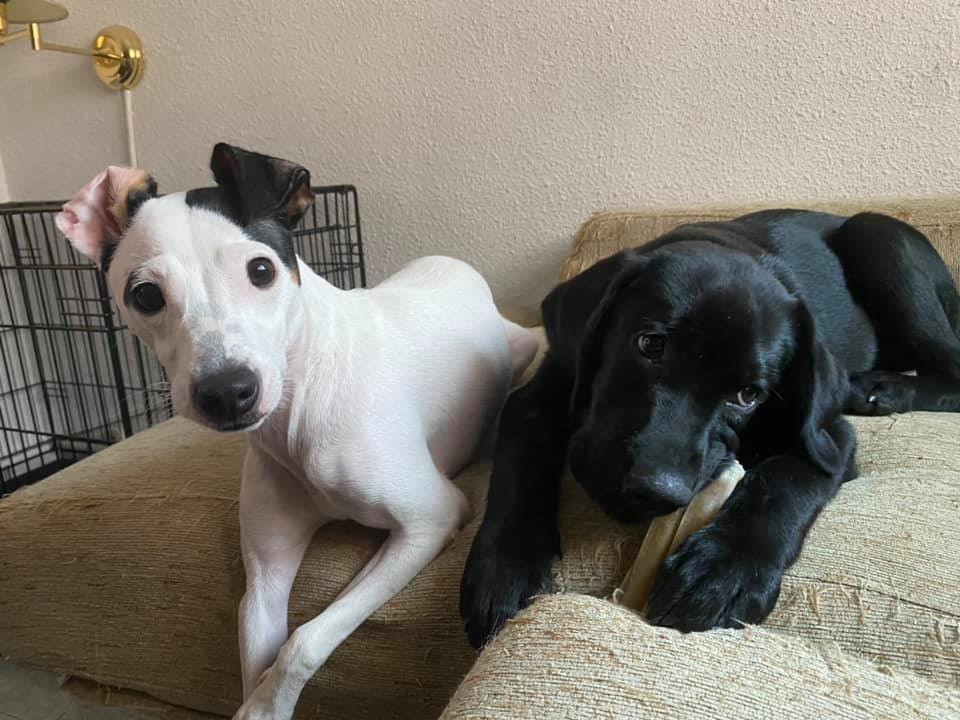

Nuestra asociación

Formamos parte de NUEVAVIDA-Adopciones. No tenemos ningún tipo ayuda económica del Estado español y el total del dinero obtenido por donaciones voluntarias, socios, eventos, adopciones o publicidad en la página, es destinado íntegramente al cuidado y rehabilitación de nuestros animales.
NUEVAVIDA Adopciones es una asociación sin ánimo de lucro nacida con la misión de ayudar a los casi 140.000 perros, gatos y otros pequeños animales que son abandonados cada año en España. Nuestra causa es la misma que la de todas aquellas protectoras cuyo único fin e interés es rescatar animales y ofrecerles un futuro mucho mejor que el que pudieran tener en su situación anterior.
NUEVAVIDA Adopciones empezó hace 10 años, con la ilusión de varias personas por salvar algunos perros de la muerte en varias perreras. Nunca imaginaron entonces que llegarían a ayudar a más de 10.000 animales a encontrar a una vida nueva y feliz integrados en un hogar!
NUEVAVIDA Adopciones tiene un albergue con capacidad para acoger a aproximadamente 60 perros, y además cuenta con una amplia red de casas de acogida, guarderías y algunas residencias para unos 40 perros más, y para todos nuestros gatos y conejos. A día de hoy tenemos tutelados, aproximadamente, unos 250 animales entre perros, gatos y conejos. Pretendemos que todos nuestros animales sean adoptados y encuentren un hogar definitivo con las condiciones necesarias para poder disfrutar de una “nueva vida” feliz y plena.
Todos los derechos reservados
Web realizada por Sara Arias Menéndez
Síguenos en las redes sociales